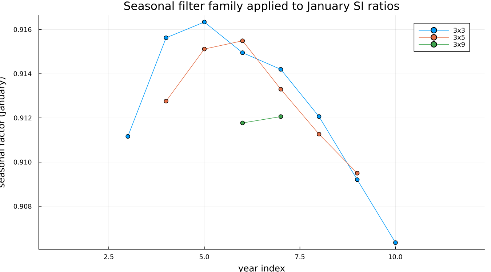
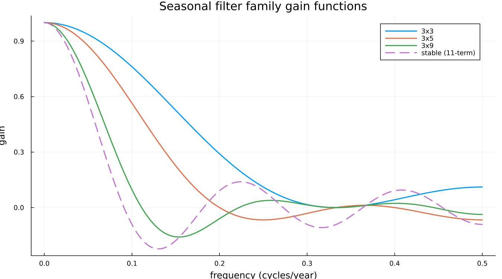
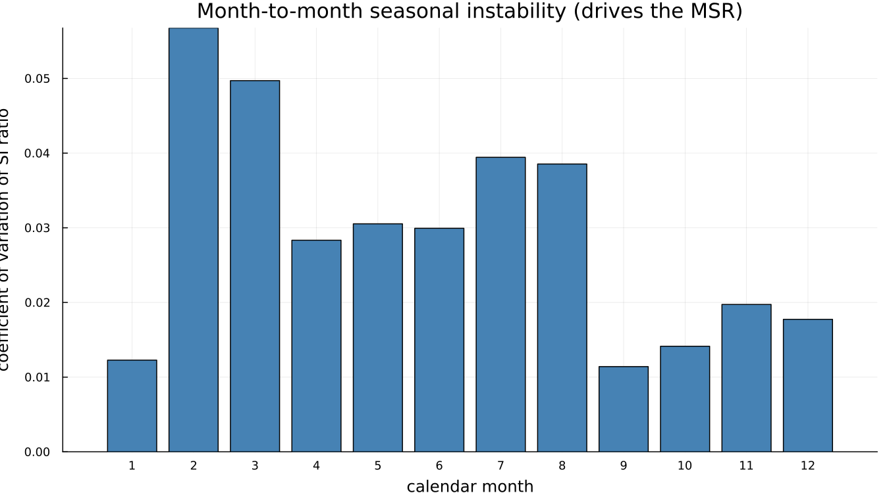

6. Seasonal Filters
6.1 Filtering across years, not along the series
This is the conceptual hurdle the rest of the chapter depends on, so it is worth stating plainly before anything else: the seasonal filter does not move along the series. It moves across years, at a fixed position in the calendar. To estimate January's seasonal factor, it looks at the SI ratio for every January in the data, smooths that sequence, and produces one seasonal-factor estimate per January. Then it does the same thing for February, independently, and so on.
A reader who pictures the seasonal filter sliding along the time axis the way the trend filter does will misread everything else in this chapter. It is exactly this layout — one calendar position at a time, compared across years — that makes monthplot (Figure B-9, Chapter 8) legible: each of its twelve bands is one of these calendar-position subseries.
6.2 What 3×3, 3×5 and 3×9 mean
A "3×5" seasonal filter is a 3-term simple average of a 5-term simple average, applied along one calendar-position subseries. The composition gives it a span, in years, of 3 + 5 - 1 = 7. The family used in practice:
| Filter | Span (years) |
|---|---|
| 3×3 | 5 |
| 3×5 | 7 |
| 3×9 | 11 |
| stable | the entire series, one factor per month, never updated |
Once the name is read as "a moving average of a moving average," it stops being an opaque label.
6.3 What each one does
Applying 3×3, 3×5 and 3×9 to the same calendar position (January) on airline shows the tradeoff directly:

The 3×3 line is the most responsive of the three, and the 3×9 line — barely visible, with only two points — is the most stable. That sparseness is itself informative rather than a drawing error: airline has twelve years of data, and an 11-year-span filter has almost no room to move within it. On a short series, the longer filters in this family are close to unusable, which is part of why the filter choice needs to be automatic rather than fixed.
Gain functions make the same tradeoff visible in the frequency domain, which is the more useful view for understanding why a filter behaves the way it does rather than only observing that it does:

Every filter in the family passes frequency 0 with gain 1 — none of them touch the series' overall level. What differs is how quickly gain falls off as frequency rises: 3×3's gain stays high longest, letting more year-to-year seasonal movement through; the stable filter's gain collapses fastest, admitting almost nothing but the long-run average shape. A filter is not just "smoother" or "rougher" in the abstract — it is a specific statement about which frequencies of seasonal change are treated as signal and which are treated as noise to be averaged away.
6.4 The moving seasonality ratio
X-13 does not leave the choice among 3×3, 3×5, 3×9 and stable to the user by default — it measures how much the seasonal pattern actually moves year to year relative to the irregular, and picks accordingly. For airline, filters reports the outcome directly: seasonal_ma = "MSR" at every calendar position, and the real .udg field behind that choice, sfmsr, reports 3x3 — the most responsive filter in the family, appropriate for a seasonal pattern with genuine, if modest, year-to-year movement.

This is not the moving seasonality ratio itself — X-13's own MSR calculation and its specific threshold cutoffs are a documented X-11 algorithm this package does not recompute — but the coefficient of variation of each month's own SI ratios shown here is the same underlying idea: some calendar months carry more year-to-year seasonal instability than others, and it is exactly this kind of instability, aggregated across all twelve months, that the real MSR measures and that ultimately selected 3×3 for this series.
X-11's selection rule between 3×3, 3×5, 3×9 and stable has specific numeric cutoffs, with an "uncertain" band that triggers a second decision pass rather than a clean threshold crossing. Those cutoffs are easy to state slightly wrong from recollection. Take them from the Census manual's own X-11 specification documentation or from Ladiray & Quenneville directly rather than restating a remembered version here.
See also: Chapter 8, Figure B-9, for what this layout looks like as monthplot's own SI-ratio overlay. Chapter 14 for the SEATS alternative to choosing a filter from a fixed family at all.